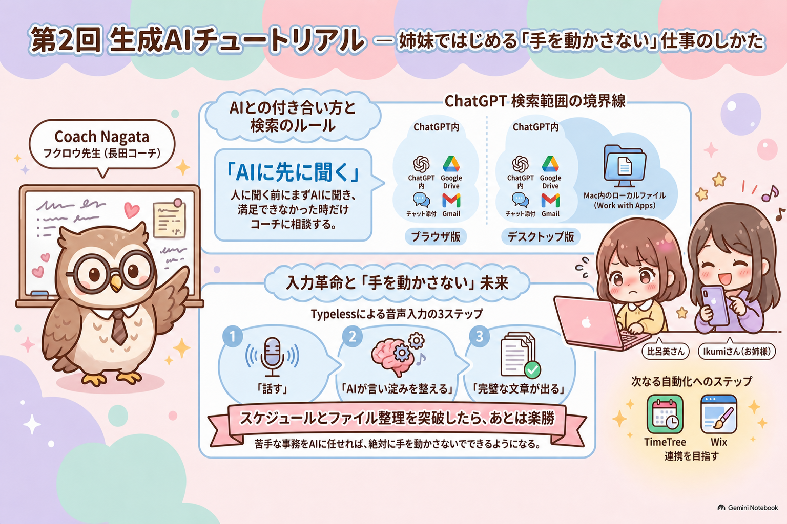

読みやすいように、前半と後半に分けました
第2回は、前半が「音声入力・ファイル探し・Wix/TimeTree」、後半が「LIUBキャンペーンの年間日程・組織・AIチーム」です。
Zoom文字起こしが前半を一部取りこぼしたため、後半LIUBは比呂美さんに追加で語っていただいた音声をもとに整理しています。
前半
音声入力・ファイル探し
Typeless、ChatGPTデスクトップ、ファイル探し、Wix/TimeTreeの次回課題。まずAIに聞いてから持ち寄る、という使い方を整理しました。
後半 / LIUB年間日程・組織図・AIチーム
LIUB追加録音だけをもとに、9月〜翌年6月の大日程、関係者図、組織図、AIに委託できる作業をまとめました。
全体インフォグラフィック

第2回セッション全体の前半復習用です。
こちらはLIUB追加録音だけをソースにして再生成したPodcastです。Typeless、Wix、TimeTree等の前半テーマは含めていません。